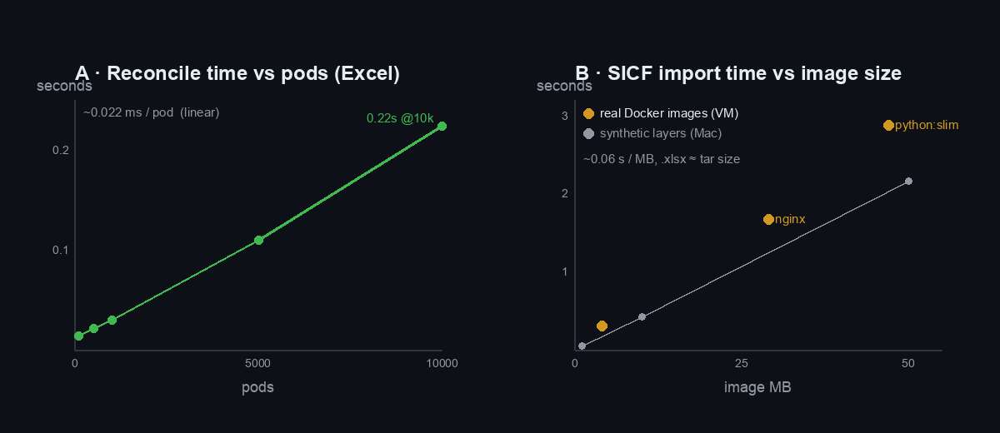
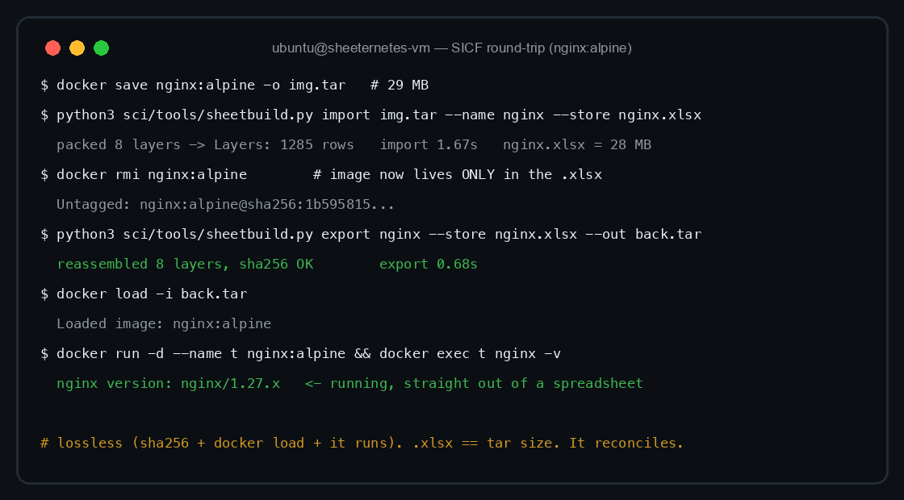
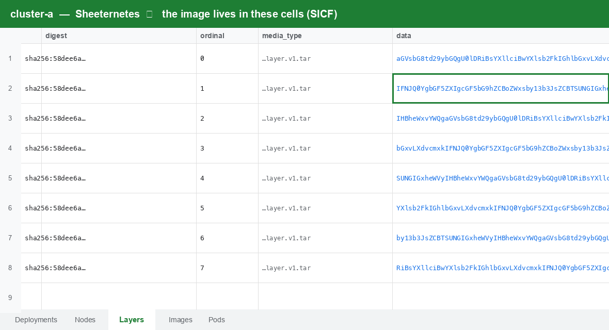
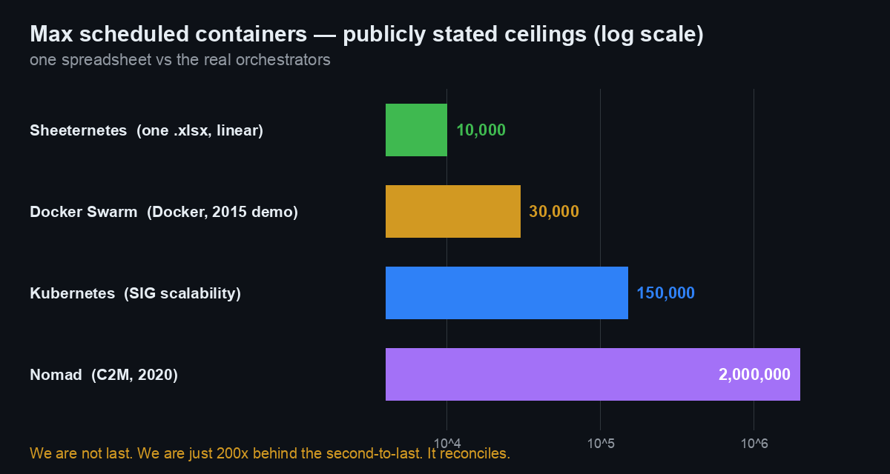
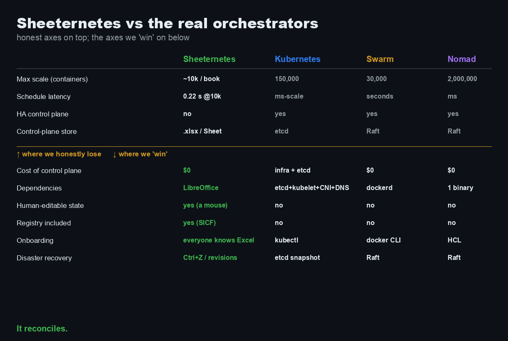

Somebody in the comments of the first article asked the only question that matters once you’ve built a container orchestrator inside a spreadsheet: how much does it actually hold? How many pods before it falls over. How big an image fits in the cells. How many clusters one machine runs. And, since we’re a foundation with a straight face, how it stacks up against the real thing — Kubernetes, Docker Swarm, Nomad.
So we ran a proper load test. Four dimensions, two backends
(.xlsx on disk and a live Google Sheet), synthetic payloads
on a laptop and real Docker images on a cloud VM. Then
we put the numbers next to the grown-up orchestrators.
The short version: on every axis that matters, we lose by three to five orders of magnitude. On the axes that don’t matter, we win clean. And one of our long-standing “facts” turned out to be wrong — the benchmark corrected us. Let’s go.
New here? What is this. Sheeternetes is a container orchestrator whose entire control plane lives inside a spreadsheet — Deployments, Nodes, Pods and Events are tabs in a Google Sheet or Excel file, a scheduler reads and writes cells, and real Docker containers run on the other end. The spreadsheet doesn’t simulate a cluster; it is the cluster. It belongs to the Sheet-Native Computing Foundation (SNCF) — a vendor-neutral, actually-working parody of the CNCF: 30+ projects, a container standard (SICF), verifiable engineer certification, and live demos on real spreadsheets. Links: sncfoundation.github.io · github.com/sncfoundation · Telegram t.me/stncf · Slack sheetncf · LinkedIn company/sheetncf
What we actually measured
apiserver.py is the whole control plane —
kube-apiserver + kube-scheduler in one small
Python process. It reads and writes the workbook (tabs
Deployments/Nodes/Pods/Events/Images/Layers) with openpyxl,
runs the scheduler on every kubelet heartbeat, and writes desired pods
back. One process, one workbook, one cluster — and it’s
a single writer, which is the whole story of where the ceiling is.
Four tests:
- A — objects in one book. Reconcile time (load + schedule + write + save) vs pod count.
- B — SICF images in cells. How many MB of container image fit, at what cost.
- C — cluster count. How many independent cluster workbooks one host reconciles.
- D — cell string length. How long a value survives before it’s corrupted.
Machines: a Mac (light points), a Cozystack cloud VM with Docker
(real-image round-trip), and the sci
sheetbuild tool for packing images.
A — pods in one workbook
Reconcile is dead linear: about 0.022 ms per pod. Ten thousand pods reconcile in 0.22 s, and the file is a rounding error — 0.21 MB.

| pods | reconcile | file | peak RAM |
|---|---|---|---|
| 1,000 | 0.030 s | 0.03 MB | 0.9 MB |
| 5,000 | 0.110 s | 0.11 MB | 8.9 MB |
| 10,000 | 0.224 s | 0.21 MB | 12.9 MB |
The Excel format isn’t the limit here — millions of rows fit. The limit is the reconcile time of a single openpyxl process, because it re-reads and re-writes the whole book on every heartbeat. Extrapolating the line: 100k pods ≈ 2.2 s per cycle. That’s when the cluster starts feeling like it’s wading through treacle.
B — how big an image fits in the cells
This is the SICF question — an image stored as base64 in
cells, addressed by sha256. On the Mac we packed synthetic
incompressible layers; on the VM we packed real Docker images
and ran them back out. Both land on the same line:
~0.06 s/MB to import, export 2–3× faster, and the
.xlsx ends up roughly the same size as the
docker save tar (base64 expansion cancels out
against the workbook’s zip compression).
The real round-trip is the part I care about. Pull a real image, save it into a workbook, delete the local copy, rebuild it purely from the cells, and start it:

Three real images, three independent integrity gates each —
sheetbuild’s internal sha256, Docker’s own docker load
validation, and the container actually executing:
| image | tar | import | export | store .xlsx | Layers rows | verify | ran |
|---|---|---|---|---|---|---|---|
alpine:latest |
4 MB | 0.30 s | 0.15 s | 4 MB | 172 | ✅ | ✅ |
nginx:alpine |
29 MB | 1.67 s | 0.68 s | 28 MB | 1,285 | ✅ | ✅ |
python:3.12-slim |
47 MB | 2.88 s | 0.96 s | 45 MB | 2,056 | ✅ | ✅ |
Because the local image was docker rmi-removed between
import and export, the rebuilt image provably came out of the
spreadsheet, not a cache. Here’s what it looks like sitting in the
cells — layers chunked into base64, one row per chunk, addressed by
digest:

RAM stayed modest (peak 191 MB for the 47 MB image, ~4× the tar). The
honest ceiling is total bytes → import seconds and RAM; a 500 MB image
would be ~30 s import on a 1-vCPU box. Native SICF is for small images —
static binaries, scratch/alpine, WASM — which
is exactly what the format was always for.
C — how many clusters on one host — and here’s the real gap
One workbook (200 pods) reconciles in ~15 ms, so a single host clears ~650 cluster-workbooks inside a 10-second interval. Excel scales sideways beautifully.
Google Sheets does not. One reconcile there is 1.47 s (network + a couple of API calls), and you’re capped by the hard 60-writes-per-minute-per-user quota:
| reconcile interval | max Google cluster-sheets per account |
|---|---|
| every 10 s | ~5 |
| every 30 s | ~15 |
| every 60 s | ~30 |
| every 5 min | ~150 |
So: ~650 Excel clusters per host, ~5 Google clusters per account. The quota, not capacity, is the ceiling in the cloud — a ~130× difference and a genuinely useful thing to know if you ever (please don’t) build on this.
D — how long a string survives in a cell, and the myth we busted
This one corrected us. We’d been repeating, including in the DOOM article, that Google Sheets silently corrupts long strings past ~2,000 characters. The benchmark says: not through the API.
| backend | intact up to | beyond |
|---|---|---|
| Excel / openpyxl | 32,767 | silent truncation to exactly 32,767 |
| Google Sheets API v4 | 50,000 | explicit HTTP 400, not corruption |
Round-tripping base64 and checking sha256, Google Sheets held
perfect integrity up to exactly 50,000 characters (its
documented cell limit), and rejected 55,000 with a loud
"more than the maximum of 50000 characters" — an error, not
a quiet mangle. The corruption we saw before was an artifact of the
Apps Script backend (the cloud Code.gs
path), not Google Sheets itself. Good. A benchmark that only confirms
your priors isn’t a benchmark.
The showdown
Now the part you scrolled down for. Here is a spreadsheet next to the real orchestrators, on the metrics they’re actually built for:

Those are public numbers: Kubernetes’ own SIG Scalability thresholds (150,000 pods, 5,000 nodes, 300,000 containers per cluster); Docker’s 2015 demo of Swarm at 30,000 containers on 1,000 nodes; and HashiCorp’s 2020 C2M run — two million containers across 6,100 nodes, scheduled in about 22 minutes. We top out around 10,000 pods in one linear workbook.
We are not last on that chart. We are merely 200× behind the second-to-last.

Where we honestly lose
No hand-waving — this is where a spreadsheet has no business anywhere near your infrastructure:
- Scale: ~10k pods/book vs 150k (K8s) vs 2M (Nomad). Four to five orders of magnitude.
- Latency: 0.22 s per reconcile at 10k pods, and 1.47 s per reconcile on Google Sheets. Kubernetes schedules in milliseconds and starts pre-pulled pods within its 5-second SLO.
- No HA control plane. A single openpyxl writer per book. etcd, Swarm’s Raft managers, and Nomad’s Raft servers all run 3–5-node quorums. We run one file and a prayer.
- The cloud backend is quota-bound to a handful of clusters per account.
Where we “win”
And yet:
- Cost of the control plane: $0. LibreOffice is free. No etcd cluster, no control-plane nodes.
- Dependencies: LibreOffice or a browser — versus etcd + kubelet + kube-proxy + a CNI + CoreDNS.
- Human-editable state. You edit a pod with a
mouse.
kubectl editis a cursor. Try that on etcd. - Registry included. The image lives in the same file as the cluster (SICF). No Harbor, no external registry.
- Onboarding: every finance intern on earth can read
the control plane. Nobody needs to learn HCL or
kubectl. - Disaster recovery: Ctrl+Z. Google Sheets keeps full revision history for free. Restore your cluster to 9:41 this morning by clicking “restore this version.”
None of these matter. That’s the joke. But every one of them is true, and a couple of them (registry-in-the-artifact, human-readable desired state, free revision-history DR) are ideas the serious systems make you work for.
Bottom line
A spreadsheet is a four-to-five-orders-of-magnitude worse
orchestrator than Kubernetes, and we can now prove it with numbers
instead of vibes. Along the way the load test showed the format itself
is barely the bottleneck — the single-writer reconcile loop is — that
real images round-trip losslessly and run, that the
.xlsx costs about what the tar costs, and that the “silent
corruption” we’d blamed on Google Sheets was our own Apps Script all
along.
That last part is the actual point of a benchmark. Do not run production on this. Do run the benchmark — it’s honest, and it will correct you.
Reproduce it yourself: the harness (Excel + Google backends, all four
tests) and the raw results.csv are in sci; the real-image
round-trip is four commands on any Docker host.
Join in
- Benchmark harness + SICF standard: github.com/sncfoundation/sci
- Sheeternetes: github.com/sncfoundation/sheeternetes
- Slack sheetncf, Telegram t.me/stncf, LinkedIn company/sheetncf
It reconciles.